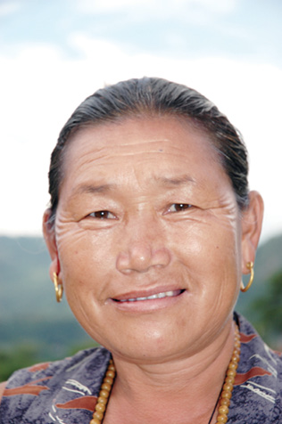

NEPAL, 24 Ağustos
Ana gelir kaynağı turizm olan fakir Nepal’de, Çin zulmünden kaçarak Nepal’e sığınan Tibetlilerin durumunu tahmin etmek hiç de zor değil. Neredeyse hiçbir kişisel eşya almadan, beş bin metrelik geçitlerden, kar yağışı altında Nepal’e gelen bu göçmenlerin tek kurtarabildikleri şey canları.
Nepal’e kaçmaya çalışan Tibetliler beş bin metrelik dağ geçitlerinden geçmeyi, -30 derecelere varan soğuk hava ile mücadeleyi ve sınır polislerinden kurtulmayı başarmak zorundalar. Bir rivayete göre vurdukları adam başına para alan keskin nişancılar tarafından avlanma tehlikesi bile varmış. Doğru ise korkunç. Tibetli göçmenlerin yoğun olarak yaşadıkları Pokhara’da sık sık yolumuz kesiliyor. Tibetliler farklı çehreleri sayesinde Nepallilerden hemen ayrılabiliyor. Aslında Nepalliler de üç ayrı etnik gruba ayrılıyorlar. Hint kökenli Brehmenler, Nepal’in asıl yerlileri olan Nevarlar ve son olarak Tibet kökenli diğer kabileler. Yüksek irtifa tırmanışlarıyla ilgili okuduğunuz her şeyde adı geçen Şerpa kelimesi bu son gruba ait klanlardan birinin adıymış aslında.
Yükseklerde yaşayıp Şerpa’lık yapanlar ile daha aşağıda şehirlerde yaşayan halk arasında biz sima olarak seçim yapabilecek kadar bir fark görmüyoruz. Asıl fark Şerpaların genetik olarak yüksek kesimlere uyum sağlamış olması. Rakımın düşük olduğu bölgelerde oturanlar, yüksek rakımlara çıktıklarında doğal olarak Şerpalar kadar rahat hareket edemiyor.
Yolumuz kesiliyor dedim, polisiye roman gibi yarıda kaldı cümle yukarıda. Yolumuzu kesenler çoğunlukla Tibet’ten yeni göç edenler. Tibetli göçmenlerin gözlerinin derinlerinde bir mutluluk göze çarpıyor. Fakat yüzlerinde, sürgünde olmanın acısı sabitleşmiş. Yolculuğun başından bu yana yanımızda taşıdığımız, bizim için özel olan küçük hediyelerimizi göle armağan ettik bugün. Yolculuk resmi olarak bitti böylece. Tibetli bir kadın yaklaştı hemen sonrasında. Yolculuğun sonu yakın. Son para hesaplarımızı da yaptık. Dönmemize yarayacak kadar parayı ayırdıktan sonra fazlasını burada harcamaya karar vermiştik zaten. Nepal’de her türlü alışverişte pazarlık yapmak şart. Fakat bu sefer, yanımıza gelen ve Tibetli bir göçmen olan bu kadının sattığı boncuklardan yapılmış kolyeleri, onun ilk söylediği fiyata hiç pazarlık yapmadan aldık. O da bunun farkına vardı ve küçük çıkınından yedi kişilik ailesinin fotoğraflarını çıkarttı. Fotoğraflar Pokhara yakınındaki Tibet göçmen kampında çekilmiş. Burayı da kampa gitmeden görmüş olduk böylece. Zor durumda yaşadıkları fotoğraflardan bile anlaşılıyor. Temel ihtiyaçlarını bile zorla giderebiliyorlar. İlk söylediği fiyata pazarlık etmeden aldığımız için hiç gocunmuyoruz. Tekrar geldiğimizde bu kampı ziyaret etmeyi çok istiyorum. Tekrar gelirsem tek bir kare bile çekmeyeceğim. Burada yaşananları Türkiye’ye yanımda taşıyamam. Başkalarına gösteremem. Evde aynı ıstıraba tekrar bakamam. Bir gün bu zulüm bittiğinde mutluluğun fotoğrafını çekmek için bekleyeceğim.
Şimdilik aklımızda kalan, Tibetlilerin gözlerindeki derin mutluluk.

Nepal, Pokhara
Değersiz taşlar satarak ihtiyacı olan şeyleri almaya çalışan Tibetli göçmen.